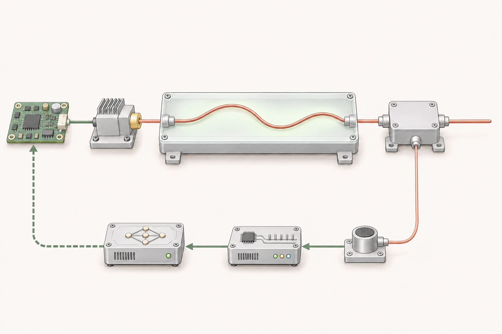
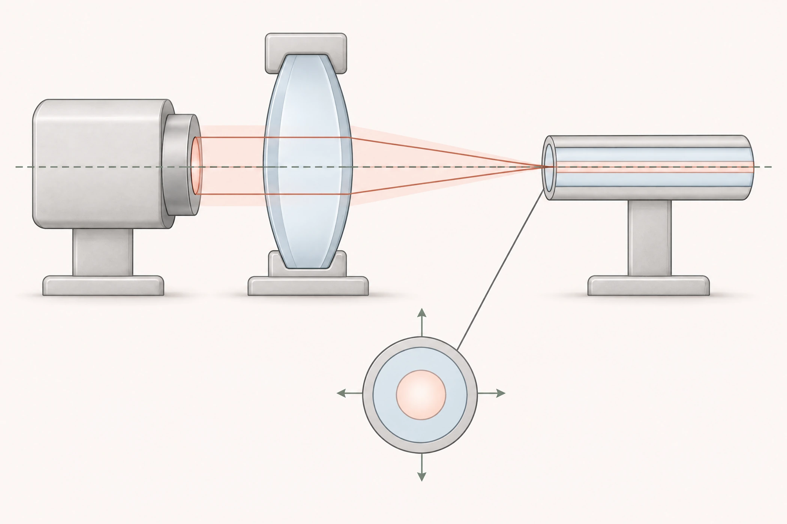

Thulium Laser / Driver Control
Current Overshoot / Ringing
~0.50 → 0.19 A
Joint debugging with electronics engineers reduced overshoot/ringing from ~0.50 A to ~0.19 A (~500 → 190 mV measured via a 1 V/A current probe).
Medical Laser / Opto-Mechatronic Integration
Thulium laser opto-mechatronic integration,
and diode laser coupling verification.

Develop medical laser platforms across optical alignment, fiber routing, assembly process refinement, pump-driver control integration, and full-system verification.
Thulium Laser / Driver Control
~0.50 → 0.19 A
Joint debugging with electronics engineers reduced overshoot/ringing from ~0.50 A to ~0.19 A (~500 → 190 mV measured via a 1 V/A current probe).
Diode Laser / Fiber Coupling
91% / 92%
Target >88% · Verified across beam shaping, fiber alignment, and assembled chassis output testing.
Current Driver → Pump LD → Tm-Doped Fiber → Output Coupler → Delivery Fiber
Collaborated with optical engineers on fiber installation, routing, fixation, and coupler alignment, refining assembly practices around mechanical and thermal constraints.
Investigated low-power anomalies jointly with optical engineers by inspecting splice integrity, localized heating, light leakage, bend loss, and coupling alignment through bench fixes and verification.
Translated laser physics and operational constraints into pump-driver requirements, key component direction, and current waveform targets; collaborated with electronics engineers on development and debugging.
Coordinated optical output, drive-current waveforms, and thermal state during system integration, drafting design documentation and test protocols. Joint debugging reduced current overshoot/ringing from ~0.50 A to ~0.19 A (~500 → 190 mV on a 1 V/A current probe).
Building on the same output coupler shared between delivery fiber and built-in thermopile sampling, redesigned sampling geometry and thermal isolation to eliminate ADC reading fluctuations and close the thulium laser power loop.
Evaluation → Beam Shaping → Fiber Coupling → System Mount → Output Test

Evaluated lens, diode, and fiber combinations on custom test benches, comparing spot geometry and transmission loss across operating conditions.
Tuned lens spacing and focal geometry to converge incident spot profiles, then aligned the fiber endface iteratively against output power readings.
Integrated the optical assembly with power delivery and cooling hardware; coordinated bracket rework and reassembly to resolve mounting-hole alignment tolerances.
Completed full-unit reassembly and power verification, achieving 91% / 92% laser-to-fiber coupling efficiency (target >88%).